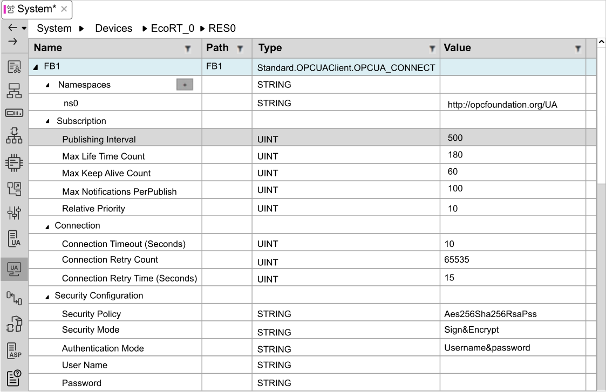
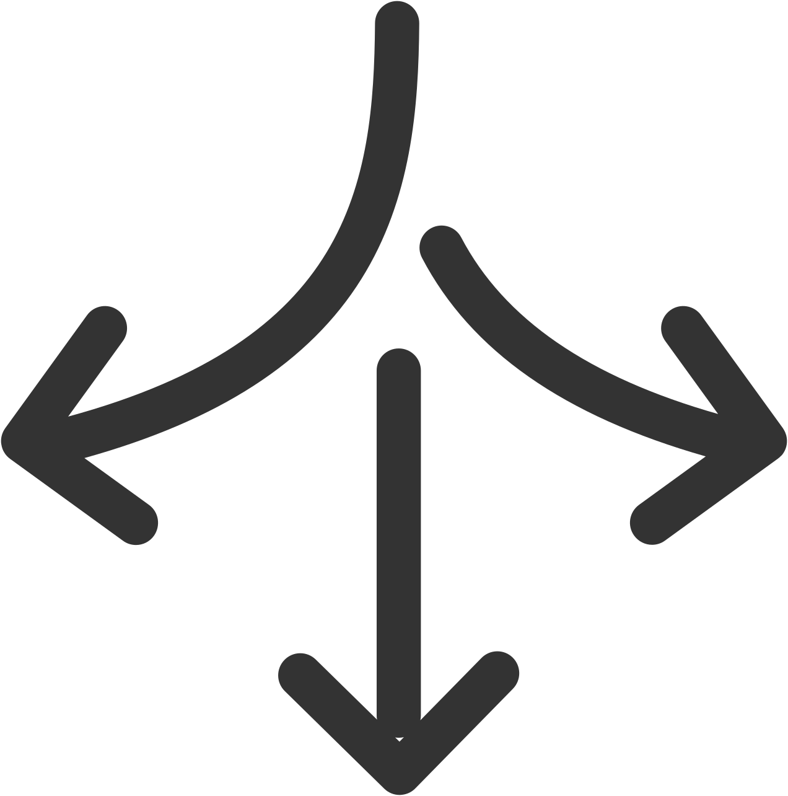
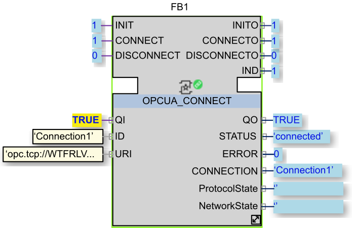

OPC UA Client Editor
Use the OPC UA Client Editor to view and configure attribute and parameter values for OPC UA Client function blocks. To use the editor, you first need to:
-
Ensure the Standard.OPCUAClient library is referenced in your solution.
Referencing the Standard.OPCUAClient Library
To use OPC UA Client function blocks, the Standard.OPCUAClient library must be referenced by your solution. To reference the Standard.OPCUAClient library:
-
In the Solution Explorer, right click on the solution.
-
Select References.
-
In the Project Library References dialog, open the Installed Libraries tab.
-
Select Standard.OPCUAClient then click Add.
-
Click OK to save your edits and close the dialog.
The Standard.OPCUAClient library appears under the Libraries node of the Solution Explorer.
Enabling the OPC UA Client Editor
By default, the OPC UA Client editor is not displayed. To enable it:
-
In the Solution Explorer, right click on the project node.
-
Select to open that tab.
-
In the Settings sub-tab, select Enable OPCUA Client configuration.
-
Click Save
 on the quick access toolbar.
on the quick access toolbar.
Displaying the OPC UA Client Editor
To display the OPC UA Client editor:
-
Open the System editor.
-
Click the OPCUA Client icon in the vertical toolbar on the left:

The OPC UA Client editor lists all OPC UA Client function block instances within the application and device (both directly and embedded in CAT/SubApp instances). It allows you to view and configure the parameters and attributes of each function block. The collection of parameters and attributes depends upon the function block. For a description of each function block and its parameters and attributes, refer to help for the Standard.OPCUAClient library (right-click on the function block name in the library and choose Help).
Configuring Attribute Values
In the OPC UA Client editor, the Value attribute is editable. Change parameter values by double-clicking and editing the default or current values.
EcoStruxure Automation Expert - Buildtime validates your edits. If your edit is:
-
Invalid, the Value cell borders turn red. A tooltip explains the reason the value is invalid.
-
Valid, the edited value appears in bold text.
Configuring Cybersecurity Settings
Communications between the OPC UA client and server can be secured using:
-
Message integrity: message validation by checking the message signature/hash.
-
Transport security: signing and encryption of the content of the messages exchanged.
-
User authentication: verification of user credentials when establishing a connection.
Cybersecurity settings are configured on the OPCUA_CONNECT function block. Creating and Testing an OPC UA Client describes how to add this function block to an OPC UA Client application.
To configure OPC UA Client cybersecurity settings:
-
In the OPC UA Client Editor, browse to the function block definition for the OPCUA_CONNECT function block.
-
Expand the Security Configuration section.
-
Configure the cybersecurity settings:
Parameter Name
Value
Security Policy
Choose the application security mode:
-
None
-
Basic128Rsa15
-
Basic256
-
Aes128Sha256RsaOeap
-
Aes256Sha256RsaPss (default)
Security Mode
Choose the transport security mode:
-
None. Communications between client and server applications are not secured. Mandatory when Security Policy is set to None.
-
Sign. Traffic is validated by the client and server applications, so messages cannot be modified while in transit.
-
Sign&Encrypt (default). All traffic is validated and also encrypted so messages cannot be read while in transit by third-party software.
Authentication Mode
Choose the user authentication mode:
-
Anonymous. User access is not controlled.
-
Username&password (default). User access requires a user name and password.
User Name
Only available when Authentication Mode is set to Username&password. Specify the user name to use to authenticate the connection.
Password
Only available when Authentication Mode is set to Username&password. Specify the password to use to authenticate the connection.
Click the eye icon
 to view the password as text.
to view the password as text.
-
Adding OPC UA Client Function Blocks
OPC UA Client function blocks can be added directly to an application or resource. They can also be part of CAT or SubApp instances. In the Application Editor or Device Editor, add function blocks by:
-
Dragging a function block from the Standard.OPCUAClient library and dropping it onto the editor, or
-
Copying and pasting an existing function block. An function block created by copy and paste includes all the configuration settings of the original function block. The name of the new function block is the same as the original with the numerical suffix “1” added (if the original had no numerical suffix) or incremented by +1 (if a numerical suffix already exists).
Creating and Testing an OPC UA Client
To create and test an OPC UA client configuration:
|
Step |
Action |
|---|---|
|
1 |
Install a third-party OPC UA Server to be able to test communications between OPC UA Client function blocks and an OPC UA server. In the third-party software, configure the following properties:
Start the OPC UA server and check it is running. |
|
2 |
In EcoStruxure Automation Expert, create a new solution. |
|
3 |
In the Solution Explorer, open the Libraries node and check that the Standard.OPCUAClient library is available. If not, install the library. |
|
4 |
Check that the OPC UA Client Editor is activated. |
|
5 |
In the Solution Explorer, navigate to , then double-click the APP1 node (or right-click and choose Open) to open the System editor. |
|
6 |
In the Solution Explorer, open the node. Drag and drop the OPCUA_CONNECT function block onto the System editor. |
|
7 |
Use the Application Editor to add constants for the following input values of the OPCUA_CONNECT function block:
NOTE: The ID and URI parameter values must be enclosed in single quotes ('), with no leading or trailing spaces.
|
|
8 |
Right-click on the function block, choose Mapping, then choose EcoRT_0. This associates the function block with the EcoRT run-time device. |
|
9 |
Select the OPC UA Client editor in the System editor and configure the cybersecurity settings to match those configured on the OPC UA Server in Step 1. |
|
10 |
Click the Deploy and Diagnostic icon (  ) on the quick access toolbar to open that editor. |
|
11 |
Deploy the application:
Result: The Deploy and Diagnostic pad shows that the application is running: |
|
12 |
In the System editor, right-click on the function block and choose Watch to display watch points for the function block inputs and outputs. |
|
13 |
Trigger the INIT event to initialize the function block. Trigger the CONNECT event to connect to the OPC UA server. Trigger the DISCONNECT event to disconnect from the OPC UA server. When connected, the real-time values of the function block outputs are displayed to the right of the data output connectors. For example:
 |
|
14 |
Troubleshoot your application. When the application is run, a non-zero value of the ERROR output indicates that an error is detected. ProtocolState and NetworkState present a textual description of the detected error. OPC UA Client detected error codes are listed in the library help (right-click on the function block and choose Help).
NOTE: Typical causes of errors include:
|
Result: You can now continue to expand the application by adding other OPC UA service function blocks. For example, add the OPCUA_READ function block to read data items exposed by the server.